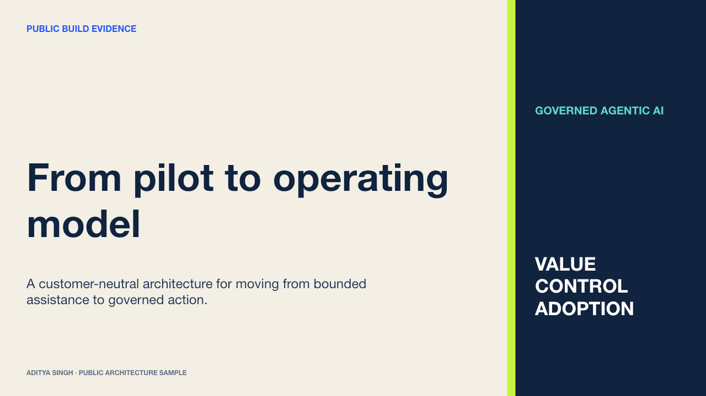

Three ways to assess the work: presentation craft, architecture depth and executable reference code. Every artifact is customer-neutral and built specifically for public review.
Original reference implementations that expose design decisions, trust boundaries and failure handling.
What they are not
Client deliverables, production repositories, customer data, proprietary schemas or deployment configuration.
How to read them
Public reconstructions of recurring patterns from my delivery record—not a claim that one client system used this exact stack or design.
Presentation studio
Sample the story, not the customer.
The three browser-previewable walkthroughs are fully editable and customer-neutral. The 28-slide master portfolio connects the recurring architecture, control and operating-model patterns into one longer narrative.

1 / 6
01 · Operating model
Governed agentic AI
How value intent, policy, planning, tool execution and audit evidence become one runtime control path.
Each walkthrough separates the execution path, the control path and the evidence path—then names the trade-offs and failure modes that matter in production.
Architecture 01
Governed agent runtime
A planner may propose work; only deterministic policy can authorize tool execution.
All three samples use only the Python standard library. Together they include 15 tests covering allow, escalate and deny paths; ACL isolation; confidence modes; metric lineage; materiality and stale evidence.
01Governed runtime5 tests
decision, reason = runtime.evaluate(plan, context)
runtime.audit_log.append(evidence(decision))
if decision is not ALLOW:
return bounded_response(reason)
return registry[plan.tool].execute(plan.arguments)
Policy, consent, budget, approval and audit around tool execution.
score = sum(metric[name] * weight[name]
for name in governed_metrics)
if evidence.is_stale or not evidence.lineage:
exclude_from_narrative(evidence)
return operating_readout(variance, owner, action)
Deterministic health, lineage, material variance and action ownership.